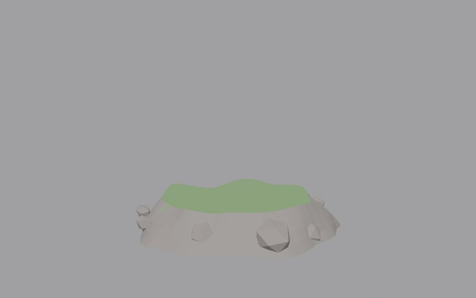
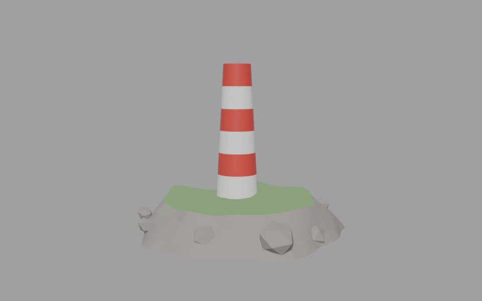
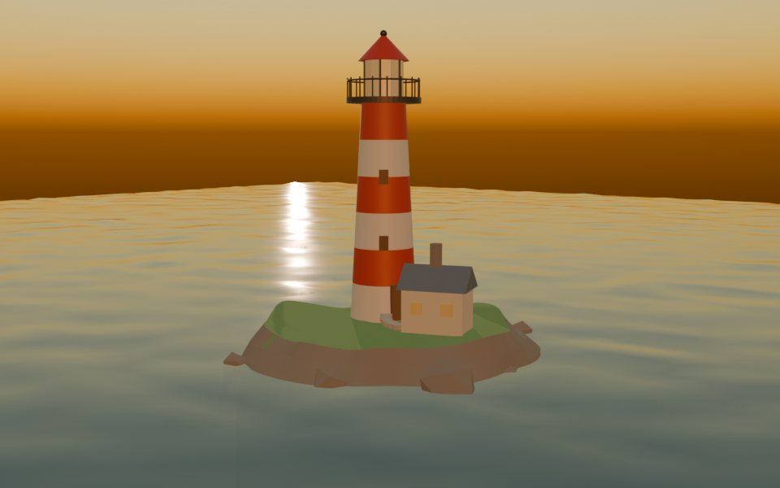
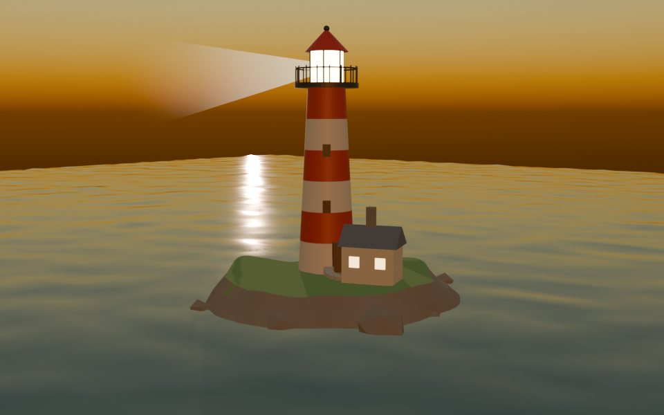

社内勉強会
AIによる3Dモデリングと
AI駆動開発
Claude Code と Blender MCP の実例と、
仕様駆動開発の進め方
はじめに
表紙の灯台ができるまで
Claude Code に日本語で指示を出し、Blender を操作させて作りました。右はその途中の様子です。
人は Blender を操作していません。形を作るのも、画像で確認して直すのも Claude Code が行いました。







空の画面島塔灯室・手すり小屋・小道海と夕空明かり
今日の内容
今日お話しすること
- AIが3Dモデルを作るしくみ
- 指示の書き方で、結果がどう変わるか
- トークン消費量と、その抑え方
- AI駆動開発・仕様駆動開発の進め方
しくみ
AIが3Dモデルを作るしくみ
→
Claude Code指示を読み、手順を考えて
道具を操作するAI
→
Blender無料の3Dソフト。
ここで形が作られる
Claude Code は、できた物の画像を自分で確認し、問題があれば直します。
AI駆動開発
AI駆動開発で変わる役割分担
| これまで | AI駆動開発 |
|---|
| 手を動かす | 人（操作やプログラムを覚える） | AI |
| 何を作るか決める | 人 | 人 |
| 結果を確かめる | 人 | AIも確認するが、最終確認は人 |
| 試作にかかる時間 | 操作を覚える時間が必要 | 数分。作り直しも容易 |
人の仕事の中心は、何を作るかを決めて伝えることと、結果を確かめることに移ります。
指示による違い
指示の書き方を変えて比べる
同じ Claude Code と Blender で、指示の文だけを変えてマグカップを作らせました。指示ごとに、何もない状態から新しい会話で始めています。
指示 B「白い陶器のマグカップを作って。取っ手をつけて」
C ＋ 追加の修正Cの結果を見て、
直したい点を伝える
指示 A
指示Aを4回頼んだ結果
この4回はすべて白い陶器でしたが、さらに試すとガラスのコップになることもありました。
指示に書いていない素材や大きさは、AIがその都度決めています。
指示による違い
マグカップの結果の比較
指示に書いた項目は、そのとおりに作られます。足りなかった点は、できた物を見てから追加で頼めば直せます。
トークン消費量
頼み方によるトークン消費量の違い
トークンは、AIが読み書きした文章量の単位です。料金や利用上限はトークン消費量で決まります。
同じ仕上がりになるまでのトークン消費量は、3回に分けて頼んでも、仕様を書いて1回で頼んでも、ほぼ同じでした。違いは、人が結果を見て指示を出した回数です。
トークン消費量
トークン消費量は、AIの作業量で増える
AIの操作1回の中身
- それまでのやり取りをすべて読む
- 次の操作（コード）を書く
- 結果（文字や画像）を受け取る
受け取った結果はやり取りに加わるので、操作を重ねるほど、毎回読む量が増えます。
今回頼んだ10回分。指示Cが線より上にあるのは、1回の操作で本体・取っ手・材質をまとめて作るなど、操作1回の中身が大きかったためです。
トークン消費量
トークン消費量を抑える方法
1
頼み直しを減らす
狙いと違う物ができて最初から頼み直すと、そのたびに約5万かかります。必要なことは最初の指示に書きます。
2
直すときは同じ会話で頼む
今回は、1回の修正で +0.4〜0.6万でした。
3
別の作業は、新しい会話で始める
会話が長くなるほど、操作のたびに読む量が増えます。前提は仕様のファイル（CLAUDE.md、copilot-instructions.md など）に書いておけば、新しい会話でも引き継げます。
4
完成の基準を書く
指示Cに「斜め上からの画像を1回見て、寸法と色分けが合っていれば完成」と足すと、約6.4万から約5.5万に減りました（操作は10回から3回）。
5
使わない道具は読み込まない
作業をさせずに比べると、Blender の道具3つを読み込むだけで約4.3万から約4.9万に増えました。
トークン消費量
GitHub Copilot に置き換えると
GitHub Copilot の月額プランは、2026年6月から、使ったトークン量に応じて「AI Credits」が減る方式になりました。
クレジットの単位
1 クレジット ＝ 0.01ドル
Copilot Pro（月10ドル）には、月1,500クレジットが含まれます。
トークンの単価（例）
入力 100万トークン ＝ 2ドル
Claude Sonnet 5.5 の場合。出力は10ドル、キャッシュ済みの入力は0.10ドルです。
換算の目安
5万トークン ≒ 10クレジット
5万トークンを入力として1回読む場合です。出力が多いと増え、キャッシュが効くと減ります。
数え方が同じなので、前のページの5つの方法は GitHub Copilot でも同じように使えます。使用量は GitHub の請求のページで確認できます。
指示の書き方
指示に書く5つの項目
目的何のために作るか
誰が使うか
形・量大きさ、数、
範囲
見た目・質色、素材、
雰囲気
条件してはいけないこと
守る制約
完成の基準何を満たせば
完成とするか
新しく入った同僚に頼むときと同じ情報を書きます。「不明な点があれば先に質問してください」と添えることもできます。
仕様駆動開発
仕様駆動開発の進め方
1. 仕様を書く
目的、入力と出力、条件、完成の基準をファイルに書きます。AIと相談しながら書いても構いません。
2. AIに作らせる
仕様のファイルを渡します。作業の手順はAIに任せます。
3. 仕様と照らして確かめる
完成の基準を満たしているかを、人が確認します。
4. 直すときは仕様を直す
仕様が残るので、誰が頼んでも同じ物を作れます。レビューもできます。
# 問い合わせ一覧の作成 仕様
## 目的
毎週の問い合わせを担当ごとに分け、
対応漏れを防ぐ
## 入力 / 出力
- 入力：先週の問い合わせメール
- 出力：表（受信日・分類・担当・
要約1行・急ぎかどうか）
## 条件
- 分類は「契約・請求・不具合・その他」
- 要約に個人名や連絡先を入れない
## 完成の基準
- 20件で、分類の誤りが2件以下
今後の進め方
導入の進め方
1
個人で試す
下書き、要約、調べ物をAIに頼んでみます。
目安：週に数回使っている
2
指示をひな形にする
うまくいった指示を5項目の形で保存し、次回も使います。
目安：ひな形が3つある
3
作業を任せる
仕様を渡して、表の整理や小さなツールの作成を任せます。
目安：確認だけで済む作業が1つある
4
チームで共有する
仕様、ひな形、確認の手順をチームで共有します。
目安：誰が頼んでも同じ品質になる
今後の進め方
AIに任せるときの注意点
AIは間違えることがあります
今回の作業でも、次のような誤りがありました。
- 取っ手の端がカップの内側に突き出ていた（指示A）
- 色の塗り分けが指定と違っていた（指示C）
どちらも Claude Code が画像を見て気づき、自分で直しました。ただし、気づかないまま残る誤りもあります。
守ること
- 最後は必ず人が確認する
- 任せる範囲を決め、元に戻せるようにしておく
- 機密情報や個人情報を入力しない
- 会社のルールに従う
まとめ
- AIは、指示を受けて道具を操作し、物を作れるようになりました。
- 指示に書いた項目はそのとおりに作られ、書いていない項目はAIが決めます。
- 何を作るかを仕様として書き、結果を確かめることが、人の仕事の中心になります。